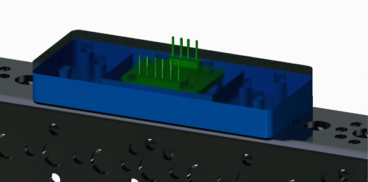
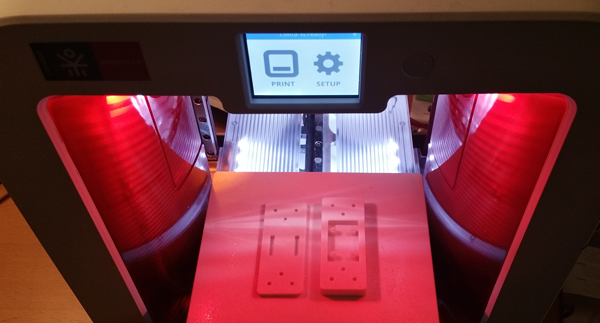
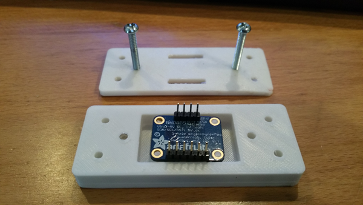
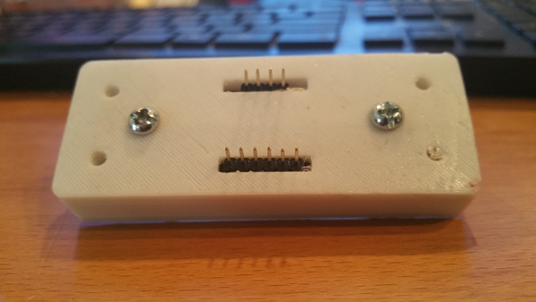

By Tycho

Task: Make a 3D Printable case for the Adafruit BNO055 IMU
We're used to having gyros to help maintain heading, but we've never been fans of the Hitechnic gyro sensor. Now we have more options and the BNO055 looks pretty good. But our testing has been off robot so far and we need a way to securely attach the sensor to our robot which bounces around like crazy when climbing the mountains. So in PTC Creo, I'm designing a 3D printable case for this sensor that we can share with other teams. I decided to build a model of the sensor first, so I could play with it in an assembly with other tetrix parts while designing the case. The goal is to have a case that bolts securely to Tetrix channels, doesn't need special screws to hold the sensor in place, is strong enough and is easy to print with no overhangs.
Reflections
The design I came up with is pretty simple - it's a box with a lid that clamps over the sensor and makes an air gap for the sensor components to sit in:



My first test print shows some issues:
- The standoffs are not perfectly centered under the holes in the board. In one direction it was probably a measurement error. In the other direction I must have made a mistake with a centerline reference when I mirrored the holes on the sensor model.
- For the same reason, the sensor is not centered in the air gap.
- The pins on the standoffs took too much filing to get to the right size. I need to make them smaller or turn them into cones or get rid of them and just leave a hole for tiny screws.
- It only has bolt holes for the Tetrix pattern (compatible with extrusions). Should probably add holes for the Actobotics pattern as well.
- The bolt holes should be bigger so they don't have to be drilled out to proper size. They were sized correctly in the model but most 3D printers tend to spread filament into the gaps.
- Should add some kind of strain relief for the sensor wires going back to the DCIM.
- Fully enclosed, heating could be a problem. Might require venting the air gap or making room for a heat sink.
So while I was able to mount the sensor in the test print by breaking two standoffs and demo that at least it securely holds the sensor to a channel, I'm improving the design and should have an STL we can share with other teams by next week. I'll add an update to this post when it's ready.